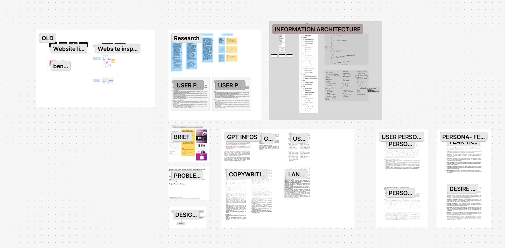
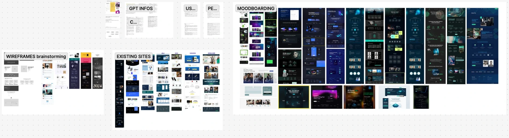
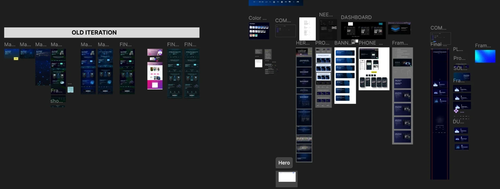
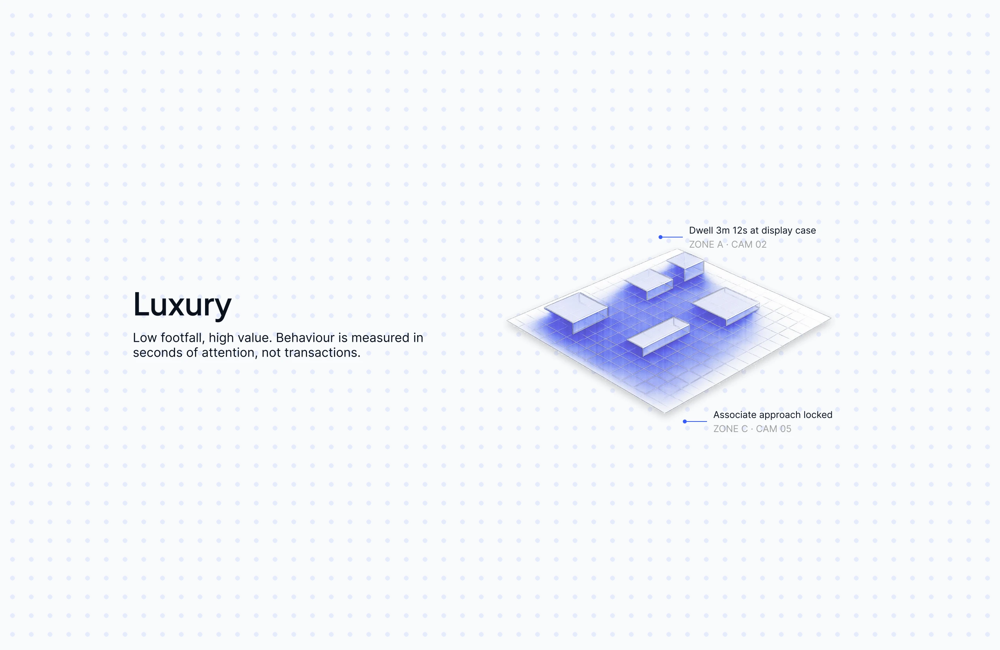
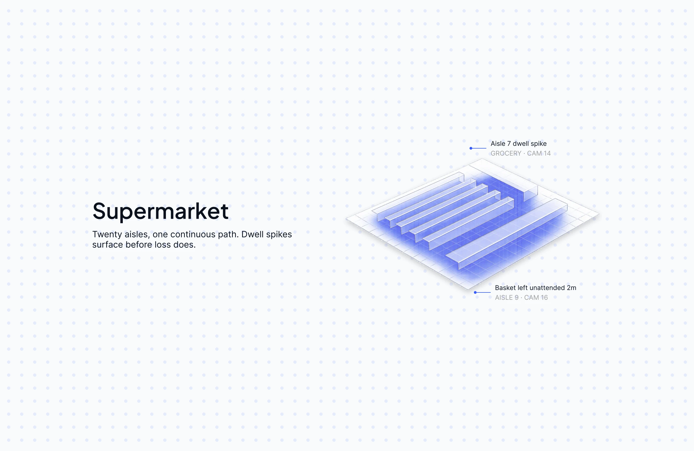
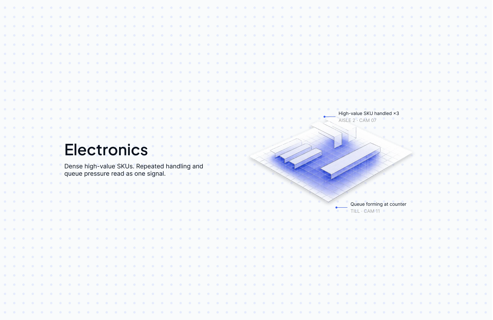
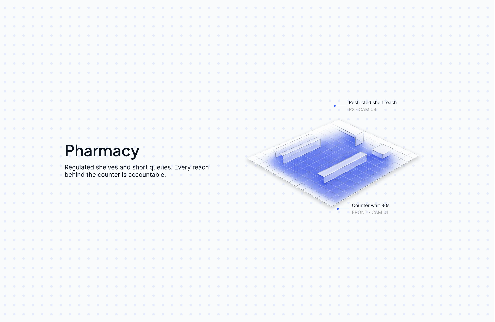
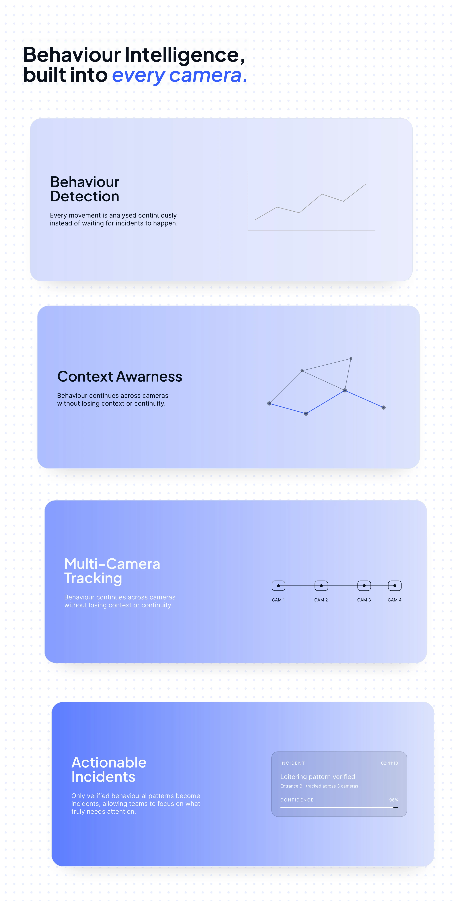

Spacture AI Website redesign · Assignment
Redesigning a security AI website so a store owner gets it in one scroll
- Introduction
Spacture AI uses computer vision to help retailers spot theft and suspicious behaviour through the cameras they already have. It's a powerful product, and that makes it hard to explain quickly.
I redesigned its homepage as an assignment in the 10K Designers C8 cohort. It isn't Spacture's live website. I did everything on my own, from research and structure to the copy and the visual design.
- My role
- UX Designer
- Team
- Solo
- Tools
- Figma
- Context
- 10K Designers C8 assignment
Research Before any screens, I wanted to know who's buying
I started on a Figma board, not a page. I wrote down the brief, built two personas around what a store owner or security head is afraid of and what they want, drafted the copy, and sketched the site's structure by hand.
The fear that shaped the page: finding out too late
Both personas I built, the people who'd buy it and the people who'd use it every day, shared one fear: realising something had happened only after the stock was gone. That fear became the page's opening, "Every moment looks ordinary. Until they connect."


The problem Buyers think in stores, not in AI models
1. Stores already have cameras
What they don't have is someone watching every feed at the moment something happens. That gap is the real problem, and it's what a store owner already feels.
2. "Computer vision" doesn't mean anything to them
Leading with the technology makes the visitor do the work of figuring out why it matters. I wanted the technology to show up as the answer, not the pitch.
So the page had to go: why it matters, how it works, what it looks like, in that order.
- 01The gapWhy should I care?
- 02The mechanismHow does it work?
- 03The productWhat does it look like?
- 04The next stepWhat do I do now?
The direction Four things the page had to do
Before designing, I wrote down what the page had to get right. Every section had to earn its place against these.
- A clear value proposition, before any mention of AI.
- The product shown in use from the first screen.
- A logical progression: the problem, how it works, what a team does with it.
- One clear next step, repeated where a visitor is ready.
Iterations It didn't start blue
My first directions were dark green and teal. The final page settled on a deep blue, with red kept only for real alerts. On the right of the canvas are the colour, component and hero frames that got it there.
Why blue won
Green and teal felt technical. A deep blue felt calmer and more trustworthy, which suits a product people rely on to keep watch, and it let the red alerts stand out as the only loud colour on the page.

Type and colour Two typefaces and one blue
Plus Jakarta Sans for headlines and buttons, Inter for everything you read. Ten colours, built around one blue, with red saved for alerts.
Plus Jakarta Sans
- Display
- Heading 1
- Heading 2
- Button Primary
- Button Secondary
Aa Bb Cc Dd Ee Ff Gg Hh Ii Jj Kk Ll Mm Nn Oo Pp Qq Rr Ss Tt Uu Vv Ww Xx Yy Zz
Aa Bb Cc Dd Ee Ff Gg Hh Ii Jj Kk Ll Mm Nn Oo Pp Qq Rr Ss Tt Uu Vv Ww Xx Yy Zz
Inter
- Body Large
- Body
- Body Small
- Caption
- Nav Link
Aa Bb Cc Dd Ee Ff Gg Hh Ii Jj Kk Ll Mm Nn Oo Pp Qq Rr Ss Tt Uu Vv Ww Xx Yy Zz
Aa Bb Cc Dd Ee Ff Gg Hh Ii Jj Kk Ll Mm Nn Oo Pp Qq Rr Ss Tt Uu Vv Ww Xx Yy Zz
- NeutralInk.Hex#09111D
- BrandPrimary.Hex#355CFF
- BrandSecondary.Hex#6EA8FE
- BrandAccent.Hex#B8C7FF
- FeedbackAlert.Hex#FF3737
- NeutralGrey.Hex#A0A0A0
- NeutralBorder.Hex#DEE6F2
- SurfaceBackground.Hex#F8FAFC
- SurfaceSection Tint.Hex#F3F9FF
- SurfaceCard.Hex#FFFFFF
The homepage Telling it as one shopper's visit
It opens with a feeling, not a feature
"Every moment looks ordinary. Until they connect." Before any product appears, the page follows one visit through a store, timestamped from entry to exit, and ends on the thing every store owner fears: the signs were already there.
Then the product, one alert at a time
The same visit is shown again, this time through Spacture's dashboard. Confidence climbs from 38% to 94% across four alerts, so you see how the product thinks instead of reading about it. (The numbers are the design's own example, not real data.)
Only then, how it works and where
Once you've seen it work, the page explains the four capabilities behind it, and shows them in four very different stores: a luxury boutique, a supermarket, an electronics store and a pharmacy.





And one clear ask
The page ends on a question, "What would you find if you could see it all?", then a demo button, the questions a buyer asks before booking one, and the footer.
Motion Movement that follows the story
I kept motion to the places where it helps the story along: scenes changing behind the headline, cards stacking as you scroll through how it works, and a footer that reacts to your pointer.
Learnings What I'd take into the next one
Explain the problem before the product
The more complex the technology, the more it helps to start with something the reader already feels. The product makes sense much faster once the problem is theirs.
Show it working instead of describing it
Following one visit through four alerts did more than any list of features could.
Restraint makes the alerts land
Keeping the palette quiet and using red only for real alerts meant the one moment that matters, "Concealment detected", couldn't be missed.